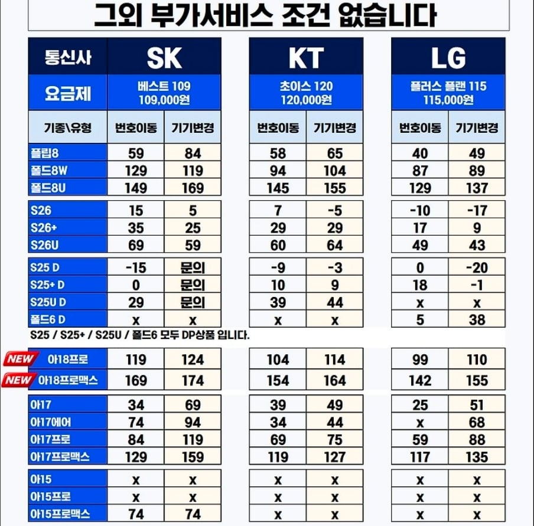

기변이 9 ㅋㅋㅋㅋㅋ
이러다 아줌마 아저씨들 손에 26+ 다 있을듯
예상질문 : 성지 어디야?
답변: 각자 사는 동네에도 많이 있으니 그냥 당근에서 검색 ㄱ

기변이 9 ㅋㅋㅋㅋㅋ
이러다 아줌마 아저씨들 손에 26+ 다 있을듯
예상질문 : 성지 어디야?
답변: 각자 사는 동네에도 많이 있으니 그냥 당근에서 검색 ㄱ
현실은 저게 조건 좋은거였으면 뽐뿌고 디시고 이미 대란으로 난리나서 터지기 직전이었을거임
나처럼 꼭 3사통신사끼고 사는애들아니면 이미 자급제랑 알뜰폰들 쓰기때문에
옛날처럼 대란안일어남
그니깐 선약 m6 에 추가지원금 없으면 말그대로 6개월 쓰고 해지하면 되니깐 (6개월 유지비 + 선약할인반환금) 이게 실 구매가인건데
지금 저 표의 시세는 딱봐도 공시거나 선약이라도 추가지원금있어서 6개월뒤에 해지해도 위약금땜에 실구매가가 싼게 아니라 평범하다는거임
만약 저게 싼거였으면 전국의 모든 쌀숭이들 본인 개통가능한 최대회선으로 개통해서 되팔이 했을걸
6개월뒤에 해지를 왜해 애초에 3사통신사쓰는사람들 위주임
그래그래 저런 시세표 올려줘서 고맙다 궁금했던점이 해결되었다
알뜰폰이랑 자급제쓰는 사람들은 상관없음
3사통신사는 써야하는데 폰바꾸고싶은사람들이 필요하지
6개월만 비싼요금제쓰고 다시 원래요금제로 돌아가기용
뭐야 공시잖아
애초에 선약은 저런거 안팔아
선약은 +63 해야하네
보통은 통신사를 옮기는 번호이동이 더 싼데
기변이 더 저렴한 경우도 많네... 뭐지...
통신요금이 비쌀듯
애초에 저게 저렴이 아님 통신사 입장에서
6개월동안 12만원 써주면 72만원인데 개꿀임
6개월쓰고 알뜰폰 갈아타는건 안돠지?
약정을 2년으로하지안나요
못해 공시고 6개월동안 12만원 쓰고 나머지 18개월은 요금할인 못받고 쓰는거임 보통 못해도 6만원짜리 요금제 써야 하는데 남은 18개월치 계산하면 70만원 넘음 평소 알뜰 요금제 2만원 쓰던 애들은 6개월동안 10만원씩 더 내고 50만원 쓰는거 + 18개월동안 70만원 이상 지출 사실상 폰 ㅈㄴ 비싸게 주고 사는거
그렇군....근데.아이폰은 왜저리 비싸..갤럭시는 싼데
갤럭시는 저렇게 안하면 안팔림..
출고가에 비하면 싼건 맞지만
요금제 생각해라 절대 싼게 아님 특히 알뜰폰 2만원대 쓰던 사람은 6개월동안 매달 12만원씩 내야되는데 공시라 25% 할인도 안됨 그럼 사실상 본인이 매달 내는 2만원 외에 + 10만원씩 더 내는건데 그럼 총 50만원..
+ 남은 18개월동안 엘지유뿔 요금제 써야되는데 데이터 편하게 쓰려면 최소 5~6만원짜리 요금제로 쓴다 치자 그럼 평소 본인이 쓰던 2만원 알뜰 요금제보다 3~4만원 더 냄 그렇게 계산하면 18개월동안 72만원을 내는거고 그럼 요금으로만 50만원+72만원 ㅋㅋㅋㅋ 거기다 맨 처음 할부완납 했던 9만원까지 하면 어휴..
저런 혜택은 평소에도 요금제 10만원 넘는거 쓴다 하는 사람들만 가는거임 통신사 입장에서 진짜 호9고객들 안놓아주려고 저렇게 푸는거지.. 알뜰폰에선 3~4만원에 무제한인데 12만원이라니.. ㅋㅋㅋ
s26플 자급제로 사도 130만원 넘지 않나? 기기값 할부라고 생각하면 알뜰폰보다 나은거같은데
저런거 어려워서 자급제..
매번 어렵네
회사에서 6만원까지 내주는데 s26+ 갈아탈만함?
Kt 기변으로 할듯 인터넷 약정땜에
아이폰 13프맥임
아이폰 유저면 계속 아이폰 써
한국에서도 아이폰으로 넘어가는 사람들이 많아지고 있는 마당에 굳이 반대로 넘어가려하네
난 가끔 초특가 뜨면 선약조건으로 돈 더주고 자급제 폰값보다 현저히 싸면 사서 3개월만 쓰고 부모님 드림 평소에도 자급제에 skt비싼요금제 55퍼할인받아써서 가입시 6개월 비싼요금제가 부담안되서 이렇게 하면 자급제사서 드리는거보단 싸더라
애초에 성지에서 폰 바꾸면 최소 유지기간이 6개월임
그전에 해지하면 위약금 폭탄 맞음
해지가 아니라 3개월쓰고 폰만 기변으로 드린다고 난 계속 계약유지상태고 작년에 선약조건으로 갤25플 70만에 현금완납해서 내가 3개월쓰고 그 폰 아버지드림 난 쓰던 자급제폰 다시 쓰다가 이번에 패넷에서 폴드8울사고 아래 댓글보면 알겠지만 난 원래 108요금제 써서 비싼요금제 쓰는건 나한텐 제약이 아님
통신사로 구매하면 절대 자급제보다 좋은 조건이 나올수가 없음 비싼데도 어쩔수 없이 결합 묶여있거나 그래서 쓰는거지
난 10.8만 요금제 48600원에 유튜브프리미엄, 5g무제한, 태블릿2대 셀룰러 쓰고 부모님은 나랑 결합해서 각자 7800원에 skt맴버십받고 데이터 108기가쓰심 니말대로 결합때문에 그럼 나 알아서 잘 계산해서 쓴다 위에도 썼는데 그덕에 난 요금 제약없이 70만에 작년5월 갤25플 70만에 새거 산거임
12만원 6개월써야됨
72만원 기본으로 내고 가는셈임
월 통신비가 3만원이 넘지 않는 나에게는 사치다!
본인이 알뜰하게 통신사혜택 싹싹 긁어먹는 스타일이 아닌 이상 걍 자급제+알뜰폰이 저렴함
더 저렴하게 쓰려면 1년 지난 플래그십 중고로 사서 알뜰폰 기변
호들갑이다
예전 s25인가 해킹 대란때는 -40도 나왔는데 ㅋㅋㅋㅋ
그냥 연례행사수준 물론 나이스한 타이밍은 맞음
근데 사람들이 기기값만 알지 통신비로 나가는건 모름
암만 -40 나와도 공시로 통신사랑 2년 계약하면 통신사는 개꿀임 6개월만해도 72만원 요금비 꿀꺽 ㅋㅋㅋ
결합으로 묶여 있는 사람이 써야 이득이지
혼자서 하기엔 많이 아쉽
ㅋㅋㅋ 걍 네이버나 공홈에서 자급제 세일 때릴때 사서 알뜰폰 쓰는게 최고임
s26자급제 체감가 70에 36개월 무이자로 삼
알뜰폰 만원대 요금제 를 카드할인 받아 오천원만 냄
알뜰요금에 절여진 몸이 됨
12욕 6개월 ㅅㅂ.. 69 6개월도 개빡셌는데..
자급제 할부로 사고 알뜰폰 무제한 요금제 or 다이렉트/요고 요금제 쓰는게 더 쌈 ㅋㅋㅋ
계산기 뚜드려보면 결국 조삼모사여
3사 다 통일되어있을껄
난 50기가짜리 씀, 옛날처럼 토렌트돌리거나 그러지 않아서 그런지
유튜브나 스포티파이 존나돌리는데도 넘치던데